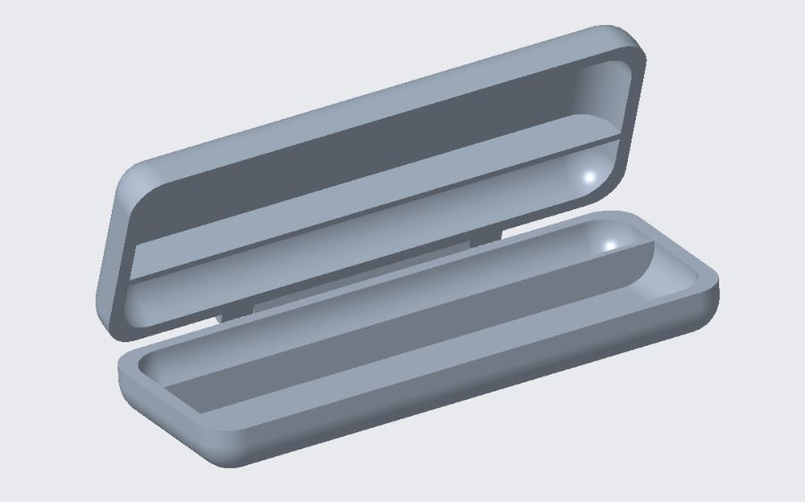

Longer write-ups of the design and build work — what the problem was, what I actually did, and what I'd change.
Air Engine Assembly
PTC Creo · Part & assembly modeling, GD&T, technical drawings
A complete pneumatic engine built from a set of technical drawings. Every component was modeled to print, constrained into a working assembly, and then detailed back out into drawings of my own. The engine itself is the excuse; the real exercise is reading intent off a drawing and matching it exactly — where the tolerance is tight because something has to slide, and where it's open because nothing depends on it.
Add assets/air-engine-assembly.png — shaded Creo render of the full assembly
The complete assembly, shaded in Creo.
What I did
Modeled each part individually from the supplied drawings — cylinder, piston, crankshaft, flywheel, and the supporting hardware — rather than modeling the assembly top-down.
Constrained the parts into an assembly that moves the way the mechanism should, so interference and travel could be checked rather than assumed.
Produced detail drawings with GD&T, choosing datums and controls that reflect how each feature is actually located and used.
Applied fits deliberately at the moving interfaces, and left non-critical features open so the part stays cheap to make.
Add assets/air-engine-drawing.png — a detail drawing with GD&T
Modeling to print is a different discipline from modeling to an idea. The drawing is a contract, and the parts only go together if you honor the parts of it that matter.
Pack-Mate — Toiletries Case
Team project · PTC Creo · Tolerance fits, design for manufacturing, sealing
A hard-sided toiletries case that packs flat and unfolds into a counter display, so the contents are laid out and reachable instead of dumped in a bag. The design problem isn't the box — it's the joint. A lid that seals reliably and a lid a person can actually open pull in opposite directions, and the whole case is really an argument about where between those two the fit should land.

Pack-Mate, packed and opened out into its counter layout.
What I did
Designed the lid-to-body interface around a deliberate tolerance stack instead of a nominal gap, so the seal survives the range of parts that would actually come out of a mold.
Selected clearance and interference fits at the sealing surfaces, trading closing force against sealing reliability.
Kept the geometry moldable throughout — draft, uniform wall thickness, and no features that would need side action for no reason.
Documented the critical dimensions on the drawing so the fit is inspectable, not just intended.
What I'd change
The next version gets a gasket groove rather than relying on the plastic-to-plastic interface alone — it decouples the seal from the molded tolerance and makes the closing force a design choice instead of a consequence.
An HC-SR04 ultrasonic sensor mounted on a servo, sweeping an arc and reporting distance at each angle. The Arduino handles timing and motion; a Processing sketch on the host draws the returns live, so the scene in front of the sensor shows up as a picture rather than a column of numbers.
Add assets/ultrasonic-rig.jpg — photo of the rig, or a screenshot of the Processing display
Sensor and servo on the bench.
What I did
Wrote the firmware in C/C++: triggering the sensor, timing the echo, converting pulse width to distance, and stepping the servo through its sweep.
Paced the sweep against the sensor's settling time so readings aren't taken while the head is still moving — the difference between a clean scan and noise.
Streamed angle-and-distance pairs over serial and rendered them in Processing as a live polar plot.
What I took from it
Most of the work in a sensor project is not the sensor. It's the timing around it, and deciding which readings to trust.
Extracting Nanocellulose from Hemp Hurd
UNC Charlotte · Undergraduate research, Department of Mechanical Engineering
Hemp hurd is the woody core left behind when hemp is processed for fiber: a high-volume agricultural byproduct with very little to do. Cellulose has been pulled out of it before, and whole ground hurd has been used to reinforce composites — but not as extracted microfiber in injection-molded plastics. That gap is the project.
Hurd is sold ground to several particle sizes, which raises the practical question we set out to answer: which grind is actually worth starting from? We ran four — sieve unders, Mill 30, Mill 60, and Mill 99 — through the same extraction and compared what came back.
The four varieties after drying and grinding, labeled by median particle size — 1410 µm and up, 1231 µm, 1003 µm, and 227 µm.
Extraction
10 g of each grind went through an identical procedure, so any difference in the output traces back to the feedstock rather than the process:
A two-hour sodium hydroxide wash at 70 °C
Two one-hour bleaching treatments in sodium chlorite
A 30-minute room-temperature sodium hydroxide wash
Oven drying at 105 °C, then grinding
Characterization
Purity and thermal stability were assessed by TGA and DTG; particle size was measured by optical microscopy. Thermal stability came out closely matched across all four varieties, and close to that of pure cellulose — meaning the extraction worked on every grind, and the decision came down to yield and purity instead.
DTG of the extracted microfibers. The four varieties track each other closely — the extraction is not the differentiator.
What we found
Cellulose microfibers can be extracted from hemp hurd.
Mill 99 gave the highest-purity fibers but was significantly harder to process.
Sieve unders — the cheapest, coarsest grind — produced fibers of comparable purity to Mill 99 at more than double the yield: 10 g of sieve unders returned about 3.5 g of fibers, against roughly 1.5 g from Mill 99.
Weighing affordability, yield, and purity, sieve unders won. The expensive input wasn't buying anything.
Next steps
Production from sieve unders has been scaled up to make enough fiber for six formulations of fiber and resin. Stress testing those biocomposite samples is what will confirm whether hurd-derived microfibers are actually viable as reinforcement.
Poster: Liam Eckhart, Shamar Lindo, Ali Alkhabbaz, Md Shah Nawaz Arafan, and Roger Tipton (PI), Department of Mechanical Engineering, UNC Charlotte. Supported by the Office of Undergraduate Research.